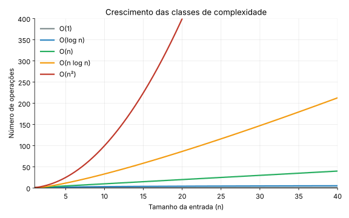

Complexidade de Algoritmos & Análise de Desempenho (gcov, gprof e cppcheck)¶
Disciplina: Estrutura de Dados
Neste capítulo, estudaremos a análise de algoritmos sob duas perspectivas: a teórica (notação Big-O) e a empírica (medição de tempo, contagem de operações e ferramentas práticas de qualidade em C: gcov, gprof e cppcheck). Essas ferramentas ajudam a visualizar quais partes do código consomem mais tempo, quais caminhos não foram testados e quais erros o compilador não aponta.
Conexão com o trabalho prático
Tudo o que aparece aqui é cobrado no Trabalho Prático de Algoritmos de Ordenação: a análise experimental (Seção 5), a cobertura (Seção 2), o profiling (Seção 3) e a análise estática (Seção 4). A Seção 7 mostra, ferramenta por ferramenta, onde cada conceito entra na entrega.
1. Análise Teórica: A Notação Big-O¶
A complexidade de tempo descreve a taxa de crescimento do tempo de execução de um algoritmo à medida que o tamanho da entrada (n) cresce. Usamos a notação Big-O para expressar um limite superior desse crescimento: dizemos que f(n) = O(g(n)) se existem constantes c > 0 e n₀ tais que f(n) ≤ c · g(n) para todo n ≥ n₀.
Big-O é uma notação para funções, não para "casos": podemos falar do pior caso, do melhor caso ou do caso médio de um algoritmo, e cada um tem sua função de custo. Na prática, quando se diz apenas "o algoritmo é O(n²)", costuma-se referir ao pior caso.
Duas notações irmãs completam o quadro:
- Ω(g(n)): limite inferior (
f(n) ≥ c · g(n)a partir de algumn₀). - Θ(g(n)): a função é ao mesmo tempo O(g(n)) e Ω(g(n)), ou seja, cresce exatamente na ordem de
g(n).
1.1 Classes de Complexidade Comuns¶
| Notação | Nome | Exemplo prático | Comportamento |
|---|---|---|---|
| O(1) | Constante | Acesso a elemento de vetor por índice | O tempo não muda, independente do tamanho dos dados. |
| O(log n) | Logarítmico | Busca binária, inserção em Árvore AVL | O tamanho do problema é dividido pela metade a cada passo. Cresce muito devagar. |
| O(n) | Linear | Busca sequencial, percurso de lista encadeada | O tempo cresce proporcionalmente ao tamanho da entrada. |
| O(n log n) | Linearítmico | Merge Sort, Quick Sort (caso médio), Heap Sort | Complexidade típica de algoritmos eficientes de ordenação. |
| O(n²) | Quadrático | Bubble Sort, Selection Sort, Insertion Sort (pior caso) | Laços aninhados. Dobrar a entrada quadruplica o tempo. |
1.2 Comparação Visual do Crescimento¶

1.3 Melhor, Médio e Pior Caso nos Algoritmos de Ordenação¶
O mesmo algoritmo pode se comportar de forma diferente conforme a entrada (aleatória, já ordenada, invertida). A tabela resume os seis algoritmos do trabalho prático:
| Algoritmo | Melhor caso | Caso médio | Pior caso | Memória extra | Estável |
|---|---|---|---|---|---|
| Bubble Sort (versão simples) | O(n²) | O(n²) | O(n²) | O(1) | Sim |
| Selection Sort | O(n²) | O(n²) | O(n²) | O(1) | Não |
| Insertion Sort | O(n) | O(n²) | O(n²) | O(1) | Sim |
| Merge Sort | O(n log n) | O(n log n) | O(n log n) | O(n) | Sim |
| Quick Sort | O(n log n) | O(n log n) | O(n²) | O(log n)* | Não |
| Heap Sort | O(n log n) | O(n log n) | O(n log n) | O(1) | Não |
*Pilha de recursão no caso médio. Com pivôs ruins, a pilha pode chegar a O(n).
Detalhes que costumam gerar dúvida
- Bubble Sort simples (sem parada antecipada, como no exemplo da Seção 6) faz sempre
n(n-1)/2comparações, qualquer que seja a entrada. O que muda com a entrada é o número de trocas: 0 em um vetor crescente en(n-1)/2em um decrescente. Só a versão com "parada antecipada" (para quando uma passada não troca nada) tem melhor caso O(n). - Insertion Sort em vetor já ordenado faz apenas
n-1comparações: é o seu melhor caso, O(n). - Selection Sort faz sempre
n(n-1)/2comparações, mas no máximon-1trocas. - Quick Sort depende do pivô. Com o pivô fixo no primeiro (ou último) elemento, uma entrada já ordenada produz o pior caso, O(n²). Com o pivô no elemento do meio ou na mediana de três, vetores ordenados ou invertidos deixam de ser o pior caso.
2. Cobertura de Código com gcov¶
O gcov é uma ferramenta integrada ao compilador GCC que analisa quais linhas do código-fonte foram de fato executadas durante um teste e quantas vezes cada uma rodou. Isso é chamado de Cobertura de Código (Code Coverage).
2.1 Como funciona o gcov?¶
Ao compilar o programa com flags especiais, o GCC insere instruções adicionais que gravam a contagem de execuções.
.gcno: arquivo criado na compilação. Contém informações para mapear o binário de volta ao código-fonte..gcda: arquivo criado ao executar o binário. Contém os dados de execução coletados em tempo de execução.
2.2 Passo a Passo de Uso¶
-
Compilação com suporte a cobertura. Usamos a flag
--coverage(ou-fprofile-arcs -ftest-coverage) junto com-O0, que desativa as otimizações do compilador e mantém a correspondência direta de linhas. Compile e ligue em duas etapas:GCC 11 ou superior
Compilar e ligar num único comando (
gcc --coverage ordenacao.c -o programa) gera os arquivos com o nomeprograma-ordenacao.gcdae.gcno, egcov ordenacao.cnão os encontra. Nesse caso, usegcov programa-ordenacao.cou prefira as duas etapas acima. -
Executar o programa para gerar os dados de contagem:
Isso cria o arquivo
ordenacao.gcdano diretório. -
Gerar o relatório
gcov, apontando para o arquivo fonte:O resumo no terminal informa o percentual de linhas executadas:
-
Ler o relatório. O arquivo
ordenacao.c.gcovtraz, à esquerda de cada linha, a contagem de execuções:10: a linha foi executada 10 vezes.#####: linha executável que nunca foi executada.-: linha sem código executável (comentários, chaves, declarações).19998*: a linha rodou, mas parte dela não (por exemplo, oreturn 0;escrito na mesma linha doif). O*aparece nas versões mais recentes dogcov.
Trecho real do exemplo da Seção 6:
1: 43: int *v1 = malloc(n * sizeof(int)); 1: 44: int *v2 = malloc(n * sizeof(int)); 1: 45: if (v1 == NULL || v2 == NULL) { #####: 46: fprintf(stderr, "Erro: falha ao alocar memória\n"); #####: 47: free(v1); #####: 48: free(v2); #####: 49: return 1; -: 50: }O bloco de tratamento de erro do
mallocnunca rodou, porque a alocação não falhou nesse teste. É um exemplo típico de código defensivo que fica sem cobertura.
2.3 Cobertura de Desvios (branches)¶
A cobertura de linhas diz se uma linha rodou. A cobertura de desvios diz se cada decisão (if, while, &&, ||) tomou os dois caminhos. Para ativá-la, use -b:
File 'ordenacao.c'
Lines executed:84.91% of 53
Branches executed:100.00% of 36
Taken at least once:83.33% of 36
Calls executed:84.62% of 13
Creating 'ordenacao.c.gcov'
- Branches executed: percentual de desvios que chegaram a ser avaliados.
- Taken at least once: percentual de desvios em que cada direção foi tomada ao menos uma vez. É a medida mais exigente: um
ifque sempre foi verdadeiro conta como "executado", mas não como "tomado nos dois sentidos".
2.4 Projetos com Vários Arquivos¶
No trabalho prático, cada algoritmo fica em um .c separado, dentro de src/basicos/ e src/avancados/. Quando os objetos ficam em outro diretório, use -o para dizer onde estão os arquivos .gcno e .gcda:
O Makefile do trabalho já faz tudo isso com make coverage, e grava os relatórios em docs/gcov/. A meta é 70% de cobertura de linhas nos seis arquivos de algoritmos.
Cobertura não é correção
Um programa pode ter 100% de cobertura e ainda estar errado, porque a cobertura só mede o que rodou, não se o resultado está certo. Por isso o exemplo da Seção 6 inclui a função estaOrdenado(): sem verificar o resultado, o teste só prova que o código não travou. Se a sua cobertura ficar abaixo da meta, acrescente testes com n = 0, n = 1, vetores com elementos repetidos, ordenados e invertidos.
3. Profiling de Desempenho com gprof¶
O gprof é um profiler do GNU. Ele mede quanto tempo a CPU gasta em cada função e quantas vezes cada função foi chamada. Enquanto o gcov responde "quais linhas foram executadas?", o gprof responde "onde o programa gastou mais tempo?".
3.1 Como funciona o gprof?¶
O gprof combina duas técnicas:
- Amostragem: a cada 10 ms o programa é interrompido e o
gprofregistra em qual função a CPU está. Esse é o tempo de cada função. - Instrumentação: o compilador insere uma chamada no início de cada função (flag
-pg) para contar quem chamou quem e quantas vezes.
Ao final da execução, os dados são gravados no arquivo gmon.out.
3.2 Passo a Passo de Uso¶
-
Compilação com suporte a profile, usando a flag
-pg:Use
-O0Com
-O2ou-O3o compilador pode embutir (inline) funções inteiras dentro de quem as chama, e elas somem do relatório. Para o profiling, use sempre-O0, lembrando que os tempos absolutos serão maiores que os de produção. -
Executar o programa normalmente, o que gera o arquivo
gmon.out: -
Gerar o relatório formatado, passando o executável e o arquivo gerado:
3.3 Interpretando o Relatório do gprof¶
O relatório contém duas tabelas principais.
A. Flat Profile (Perfil Plano)¶
Mostra o tempo gasto em cada função, ordenado por consumo. Saída real do programa da Seção 6, com n = 10000:
Flat profile:
Each sample counts as 0.01 seconds.
% cumulative self self total
time seconds seconds calls ms/call ms/call name
100.00 0.12 0.12 1 120.00 120.00 bubbleSort
0.00 0.12 0.00 2 0.00 0.00 estaOrdenado
0.00 0.12 0.00 1 0.00 0.00 quickSort
% time: porcentagem do tempo total gasta nesta função.self seconds: tempo gasto exclusivamente nesta função.calls: número de chamadas.self ms/call: tempo médio por chamada.
O Quick Sort leva menos que o intervalo de amostragem de 0,01 s e aparece com 0%. Os tempos absolutos variam de uma máquina para outra.
B. Call Graph (Grafo de Chamadas)¶
Mostra qual função chamou qual outra, e quantas vezes. Trecho do mesmo exemplo:
index % time self children called name
0.00 0.00 2/2 main [2]
[3] 0.0 0.00 0.00 2 estaOrdenado [3]
-----------------------------------------------
11928 quickSort [4]
0.00 0.00 1/1 main [2]
[4] 0.0 0.00 0.00 1+11928 quickSort [4]
11928 quickSort [4]
O valor 1+11928 do quickSort indica 1 chamada externa (vinda do main) mais 11928 chamadas recursivas. O call graph é útil para identificar gargalos que não aparecem no flat profile.
3.4 A Resolução de 10 ms¶
Como o gprof amostra a cada 10 ms, programas muito rápidos não geram dados suficientes. Rodando o mesmo exemplo com n = 1000, o relatório sai assim:
Por isso, no trabalho prático o profiling usa n = 50000 por padrão. Para analisar os algoritmos avançados (que são rápidos), aumente n e escolha um algoritmo por vez:
make profile # n = 50000, todos os algoritmos
make profile N=2000000 ALG=quick # só o Quick Sort, com n grande
3.5 Visualização Gráfica (Opcional)¶
O gprof2dot converte o relatório em um grafo, desenhado pelo dot (pacote Graphviz):
pip install gprof2dot
sudo apt install graphviz
gprof programa gmon.out | gprof2dot | dot -Tpng -o grafo.png
4. Análise Estática com cppcheck¶
Enquanto o gcov e o gprof observam o programa em execução, o cppcheck lê o código-fonte sem executá-lo e procura erros que o compilador costuma deixar passar: vazamentos de memória, acessos fora dos limites, variáveis não usadas, ponteiros nulos.
4.1 Instalação e Uso¶
sudo apt install cppcheck
cppcheck --enable=warning,style,performance,portability --std=c11 \
--inline-suppr --suppress=missingIncludeSystem src tests
O cppcheck escreve os resultados na saída de erro (stderr). Para guardá-los em arquivo, redirecione com 2> arquivo.txt (é o que faz o make cppcheck do trabalho).
4.2 Exemplo¶
Considere este arquivo com dois problemas:
Saída real do cppcheck:
bug.c:6:6: error: Array 'v[5]' accessed at index 5, which is out of bounds. [arrayIndexOutOfBounds]
v[5] = 1;
^
bug.c:7:1: error: Memory leak: p [memleak]
}
^
O vetor v tem posições de 0 a 4, então v[5] está fora dos limites; e a memória alocada para p nunca é liberada. O cppcheck também emite avisos de estilo (como variáveis atribuídas e nunca lidas), omitidos acima.
4.3 Classificação das Mensagens¶
| Tipo | Significado | O que fazer |
|---|---|---|
error |
Erro real no código (acesso inválido, vazamento) | Corrigir sempre |
warning |
Comportamento perigoso ou suspeito | Corrigir, ou justificar por escrito |
style |
Sugestão de estilo (variável não usada, const) |
Pode manter, se justificado |
performance |
Possível ganho de desempenho | Avaliar caso a caso |
portability |
Pode se comportar diferente em outras plataformas | Avaliar caso a caso |
O malloc sem verificação
Ao analisar uma versão anterior do exemplo da Seção 6, sem o teste if (v1 == NULL || v2 == NULL), o cppcheck apontou vários avisos nullPointerOutOfMemory (uso de ponteiro que pode ser nulo se a alocação falhar). É a mesma boa prática dos capítulos anteriores: sempre verifique o retorno do malloc.
5. Medição Empírica: Tempo e Contagem de Operações¶
A teoria prevê como o custo cresce; a medição confirma (ou contradiz) a previsão no seu computador. Há duas medidas complementares:
- Tempo de execução, com
clock()da biblioteca<time.h>. Depende da máquina, do compilador e da carga do sistema. - Contagem de operações (comparações e trocas), feita pelo próprio código. É exata e reprodutível, independente da máquina.
5.1 Exemplo: Bubble Sort com Três Tipos de Entrada¶
No trabalho prático, todos os algoritmos recebem um ponteiro para uma estrutura Metricas, que acumula os contadores. Este exemplo aplica a ideia ao Bubble Sort:
#include <stdio.h>
#include <stdlib.h>
#include <time.h>
typedef struct {
unsigned long comparacoes;
unsigned long trocas;
} Metricas;
void bubbleSort(int v[], int n, Metricas *m) {
for (int i = 0; i < n - 1; i++) {
for (int j = 0; j < n - i - 1; j++) {
m->comparacoes++;
if (v[j] > v[j+1]) {
int temp = v[j];
v[j] = v[j+1];
v[j+1] = temp;
m->trocas++;
}
}
}
}
// tipo: 0 = aleatório, 1 = crescente, 2 = decrescente
void gerarVetor(int v[], int n, int tipo) {
srand(42);
for (int i = 0; i < n; i++) {
if (tipo == 0) v[i] = rand();
else if (tipo == 1) v[i] = i;
else v[i] = n - i;
}
}
int main(void) {
const int n = 5000;
const char *nomes[] = {"aleatorio", "crescente", "decrescente"};
int *v = malloc(n * sizeof(int));
if (v == NULL) return 1;
for (int tipo = 0; tipo < 3; tipo++) {
gerarVetor(v, n, tipo);
Metricas m = {0, 0};
clock_t ini = clock();
bubbleSort(v, n, &m);
clock_t fim = clock();
double ms = 1000.0 * (fim - ini) / CLOCKS_PER_SEC;
printf("%-12s tempo=%7.1f ms comparacoes=%lu trocas=%lu\n",
nomes[tipo], ms, m.comparacoes, m.trocas);
}
free(v);
return 0;
}
Saída em uma máquina de teste (compilado com gcc -O2; os tempos variam, as contagens não):
aleatorio tempo= 61.5 ms comparacoes=12497500 trocas=6170685
crescente tempo= 10.2 ms comparacoes=12497500 trocas=0
decrescente tempo= 88.6 ms comparacoes=12497500 trocas=12497500
Como interpretar:
- As comparações são idênticas nos três casos (
5000 · 4999 / 2 = 12.497.500): o Bubble Sort simples não "enxerga" que o vetor já está ordenado. - As trocas variam de 0 (crescente) a
n(n-1)/2(decrescente); no vetor aleatório, cerca de metade. - O tempo acompanha as trocas: o caso crescente é o mais rápido porque nenhuma troca é feita.
5.2 Boas Práticas de Medição¶
| Prática | Motivo |
|---|---|
| Medir só a ordenação (não a geração do vetor nem a cópia) | O cronômetro deve capturar apenas o que está sendo comparado |
Usar semente fixa (srand(42)) |
Resultados reproduzíveis |
| Repetir e tirar a média | Reduz o ruído do sistema |
Variar n (por exemplo 1.000, 5.000, 10.000, 50.000) |
Permite ver a curva de crescimento, não só um ponto |
| Testar entrada aleatória, crescente e decrescente | Expõe melhor e pior caso |
Compilar o benchmark com -O2 |
Mede o desempenho real do programa |
Quais flags usar em cada ferramenta
| Atividade | Flags | Motivo |
|---|---|---|
| Testes e benchmark | -O2 |
Desempenho real |
gcov |
-O0 --coverage |
Correspondência direta com as linhas do código |
gprof |
-O0 -g -pg |
O inline do otimizador esconde funções |
cppcheck |
(não compila) | Analisa o código-fonte |
5.3 Comparando com a Teoria¶
Ao analisar os resultados no trabalho prático, vá além de dizer "o Quick Sort foi mais rápido". Pergunte:
- Quando
ndobra, o tempo dos algoritmos O(n²) quadruplica? E o dos O(n log n) pouco mais que dobra? - Os resultados contradizem a teoria em algum ponto? Por quê? (Constantes ocultas, efeitos de cache, entrada pequena, parada antecipada...)
- A contagem de comparações e trocas explica a diferença de tempo entre os algoritmos?
6. Visualizando em Conjunto: Um Exemplo Completo¶
Temos um arquivo ordenacao.c com o Bubble Sort e o Quick Sort. Queremos comparar a performance, verificar se os resultados estão corretos, ver o que os testes cobrem e procurar erros no código.
Código Exemplo (ordenacao.c)¶
#include <stdio.h>
#include <stdlib.h>
void bubbleSort(int v[], int n) {
for (int i = 0; i < n - 1; i++) {
for (int j = 0; j < n - i - 1; j++) {
if (v[j] > v[j+1]) {
int temp = v[j];
v[j] = v[j+1];
v[j+1] = temp;
}
}
}
}
void quickSort(int v[], int n) {
if (n <= 1) return;
int pivo = v[n / 2];
int i = 0, j = n - 1;
while (i <= j) {
while (v[i] < pivo) i++;
while (v[j] > pivo) j--;
if (i <= j) {
int temp = v[i];
v[i] = v[j];
v[j] = temp;
i++; j--;
}
}
if (j > 0) quickSort(v, j + 1);
if (i < n) quickSort(v + i, n - i);
}
int estaOrdenado(const int v[], int n) {
for (int i = 0; i < n - 1; i++) {
if (v[i] > v[i+1]) return 0;
}
return 1;
}
int main(int argc, char *argv[]) {
int n = (argc > 1) ? atoi(argv[1]) : 10000;
int *v1 = malloc(n * sizeof(int));
int *v2 = malloc(n * sizeof(int));
if (v1 == NULL || v2 == NULL) {
fprintf(stderr, "Erro: falha ao alocar memória\n");
free(v1);
free(v2);
return 1;
}
// Gerar dados aleatórios (mesmos valores nos dois vetores)
srand(42);
for (int i = 0; i < n; i++) {
int val = rand() % 100000;
v1[i] = val;
v2[i] = val;
}
printf("Ordenando com Bubble Sort (n=%d)...\n", n);
bubbleSort(v1, n);
printf("Ordenando com Quick Sort (n=%d)...\n", n);
quickSort(v2, n);
if (!estaOrdenado(v1, n) || !estaOrdenado(v2, n)) {
fprintf(stderr, "ERRO: vetor não ficou ordenado!\n");
free(v1);
free(v2);
return 1;
}
printf("OK: os dois vetores estão ordenados.\n");
free(v1);
free(v2);
return 0;
}
O programa aceita o tamanho do vetor como argumento (./programa 50000) e usa n = 10000 por padrão.
Script de Análise Completa (analise.sh)¶
Você pode usar um script para compilar e analisar tudo de uma vez:
#!/bin/bash
set -e
echo "=== 1. COMPILANDO PARA COBERTURA (GCOV) ==="
gcc -O0 -g --coverage -c ordenacao.c
gcc --coverage ordenacao.o -o prog_cov
echo "=== 2. EXECUTANDO ==="
./prog_cov
echo "=== 3. RELATÓRIO GCOV (linhas e branches) ==="
gcov -b ordenacao.c
echo "--- Linhas nunca executadas ---"
grep -n '#####' ordenacao.c.gcov || true
echo "=== 4. PROFILE (GPROF) ==="
gcc -O0 -g -pg ordenacao.c -o prog_prof
./prog_prof
gprof prog_prof gmon.out > relatorio_gprof.txt
echo "--- Flat profile ---"
head -n 10 relatorio_gprof.txt
echo "--- Call graph ---"
sed -n '/Call graph/,/This table describes/p' relatorio_gprof.txt
echo "=== 5. ANÁLISE ESTÁTICA (CPPCHECK) ==="
cppcheck --enable=warning,style,performance,portability --std=c11 ordenacao.c
O Que Observar nos Resultados¶
| Ferramenta | O que o exemplo mostra |
|---|---|
gcov |
84,91% das linhas. As oito linhas ##### são os dois blocos de tratamento de erro (falha do malloc e vetor não ordenado), que nunca rodam em uma execução normal. |
gcov -b |
Só 83,33% dos desvios foram tomados nos dois sentidos: os if de erro nunca foram verdadeiros. |
gprof |
O bubbleSort concentra praticamente todo o tempo, enquanto o quickSort fica abaixo da resolução de 10 ms. |
cppcheck |
Resta apenas uma sugestão de estilo (argv poderia ser const), que pode ser mantida com justificativa. |
7. Da Aula ao Trabalho Prático¶
| Conceito desta aula | Entregável do trabalho | Comando |
|---|---|---|
Tempo (clock()), comparações e trocas, comparação com a teoria (Seções 1 e 5) |
docs/resultados.csv e docs/analise.md |
make bench |
| Cobertura de linhas ≥ 70% nos 6 algoritmos (Seção 2) | docs/cobertura.md e docs/gcov/ |
make coverage |
Profiling com n grande (Seção 3) |
docs/perfil_bruto.txt e docs/perfil.md |
make profile |
| Análise estática (Seção 4) | docs/cppcheck_bruto.txt e docs/cppcheck.md |
make cppcheck |
No vídeo de defesa, o grupo precisa mostrar o gcov (cobertura obtida), o gprof (funções mais pesadas), o cppcheck (correções feitas) e confrontar a tabela de medições com a teoria da Seção 1.
8. Exercícios para Fixação¶
Exercício 1 — Contagem no Bubble Sort¶
Para um vetor de n = 5 elementos, quantas comparações o Bubble Sort simples (sem parada antecipada) faz em um vetor crescente? E em um decrescente? Quantas trocas faz em cada caso?
Gabarito
Exercício 2 — Entrada Já Ordenada¶
Quantas comparações o Insertion Sort faz em um vetor já ordenado de n = 1000 elementos? Qual o seu custo nesse caso, em notação Big-O?
Gabarito
Exercício 3 — Relatório Vazio¶
Você rodou o gprof com n = 1000 e o relatório saiu com "no time accumulated". Isso significa que o programa não gastou tempo? O que fazer?
Gabarito
Exercício 4 — Linhas #####¶
No relatório do gcov do exemplo, as linhas do bloco if (!estaOrdenado(...)) aparecem como #####. Isso é um problema? Como conseguir cobri-las?
Gabarito
Não é um defeito: o bloco só roda quando a ordenação falha, e o programa
está correto. Mas mostra que o caminho de erro nunca foi exercitado.
Para cobri-lo, um teste precisa provocar a condição (por exemplo, chamando
a verificação com um vetor desordenado de propósito, em um teste separado).
Lembre: 100% de cobertura não prova que o programa está correto.
9. Resumo de Comandos Úteis¶
┌──────────────────────────────────────────────────────────────┐
│ COMMAND CHEATSHEET - COBERTURA, PERFIL E ANÁLISE ESTÁTICA │
├──────────────────────────────────────────────────────────────┤
│ GCOV (COBERTURA DE CÓDIGO) │
│ 1. gcc -O0 -g --coverage -c fonte.c │
│ gcc --coverage fonte.o -o bin │
│ 2. ./bin (roda os testes) │
│ 3. gcov fonte.c (linhas; gera fonte.c.gcov) │
│ gcov -b fonte.c (inclui cobertura de desvios) │
│ gcov -o dir dir/*.c (objetos em outro diretório) │
│ │
│ GPROF (ANÁLISE DE TEMPO DE CPU) │
│ 1. gcc -O0 -g -pg -o bin fonte.c │
│ 2. ./bin (gera gmon.out; use n grande: amostragem de 10 ms) │
│ 3. gprof bin gmon.out > relatorio.txt │
│ │
│ CPPCHECK (ANÁLISE ESTÁTICA) │
│ cppcheck --enable=warning,style,performance,portability \ │
│ --std=c11 src tests 2> relatorio.txt │
│ │
│ FERRAMENTAS VISUAIS COMPLEMENTARES │
│ • gcovr / lcov + genhtml (relatórios HTML do gcov) │
│ • gprof bin gmon.out | gprof2dot | dot -Tpng -o grafo.png │
└──────────────────────────────────────────────────────────────┘
Material elaborado para a disciplina de Estrutura de Dados — Curso de Engenharia de Computação
Prof. Sérgio Souza Costa | Atualizado: 2026